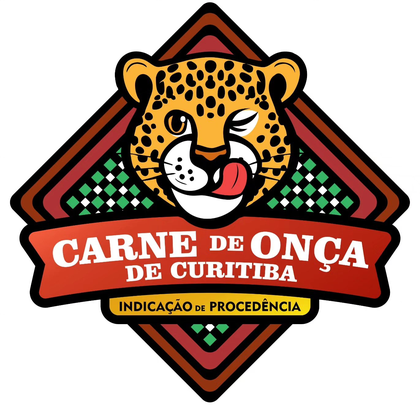
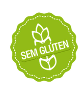
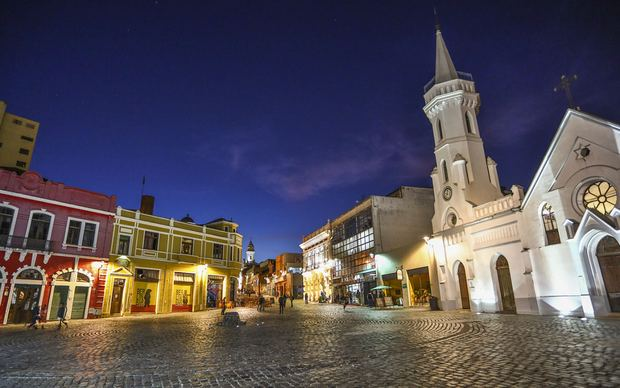
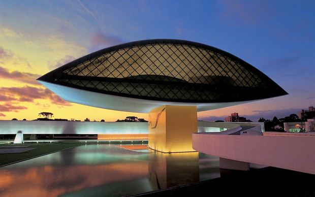
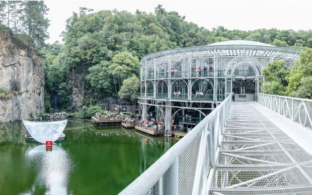
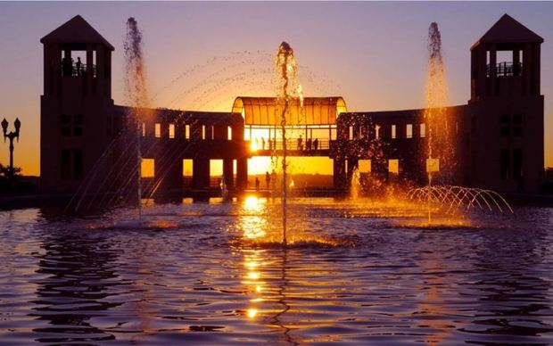
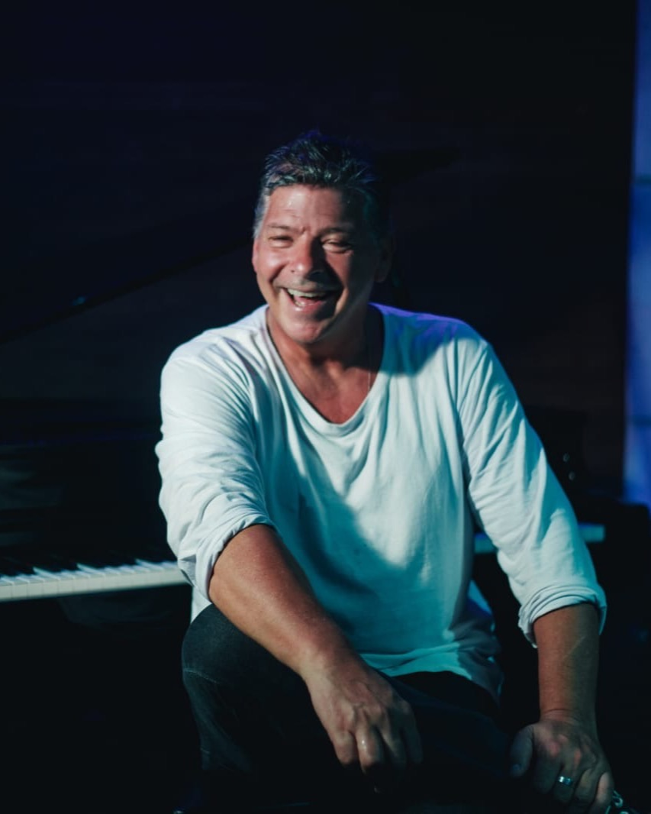

A Curitiba tradition, now delivered to your door. An authentic culinary experience for visitors and locals, available in four versions: Original, Ushuaia, Vegan and Gluten-Free.
Curitiba's tradition and the original recipe are preserved. At the same time, we offer alternatives so people with celiac disease, vegetarians and vegans can enjoy this culinary experience.

200 g of fresh lean beef, seasoned with salt, onion, organic chives, black pepper and extra virgin olive oil. Served on rye bread, with dark mustard and extra virgin olive oil.

Indication of Source200 g of fresh lean beef, seasoned with salt, onion, organic chives, paprika, cachaça and extra virgin olive oil. Choose your bread when ordering. Served with dark mustard and extra virgin olive oil.
200 g of plant-based meat, seasoned with salt, onion, organic chives, paprika, cachaça and extra virgin olive oil. Choose your bread when ordering. Served with dark mustard and extra virgin olive oil.

200 g of fresh lean beef, seasoned with salt, onion, organic chives, paprika, cachaça and extra virgin olive oil. Served with gluten-free bread, dark mustard and extra virgin olive oil.
Carne de Onça originated in Curitiba's bars between the 1930s and 1940s and became popular in the 1950s. Despite its unusual name, it contains no jaguar meat: it is prepared with fresh beef.
In 2016, it was recognized as part of Curitiba's Intangible Cultural Heritage. In 2025, the Associação dos Amigos da Onça obtained official recognition from Brazil's INPI as a Geographical Indication, in the Indication of Source category.
Curitiba's Carne de Onça recipe includes another product with Geographical Indication: rye bread.





Before creating Ushuaia Carne de Onça, Cesar Reis spent 35 days riding a motorcycle through Patagonia, following Route 40 and crossing the mountains to Ushuaia, Argentina.
Two years later, his passion for music and Curitiba's culture inspired the Ushuaia Piano Bar, which welcomed renowned musicians over the course of ten years.
Today, that story begins a new chapter. Through a delivery kitchen, Cesar Reis and his family bring Carne de Onça to you in the Original, signature Ushuaia, Vegan and Gluten-Free versions.
A journey shaped by travel, music and flavor — now delivered to the tables of Curitiba's residents and visitors.
Original, Ushuaia, Vegan or Gluten-Free.
One tap starts the conversation. You can also order through iFood or 99Food.
Your meal arrives in sealed, tamper-evident packaging for your safety.

A traditional bar dish from Curitiba.

We found a way for more people to enjoy the Carne de Onça experience.
Carne de Onça is one of the first dishes visitors hear about when asking what to eat in Curitiba. We serve hotels, guesthouses and events with customized formats and quantities.